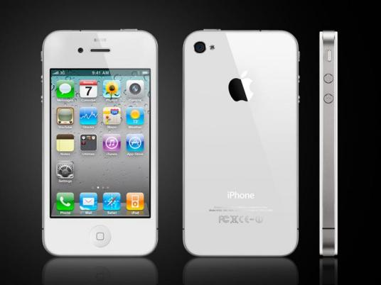

Jobs famously introduced the original iPhone as if it were three separate products: a widescreen iPod with touch controls, a revolutionary mobile phone, and a breakthrough internet communications device. The crowd at Macworld San Francisco erupted with cheerful applause upon realizing that Jobs was referring to a single device.